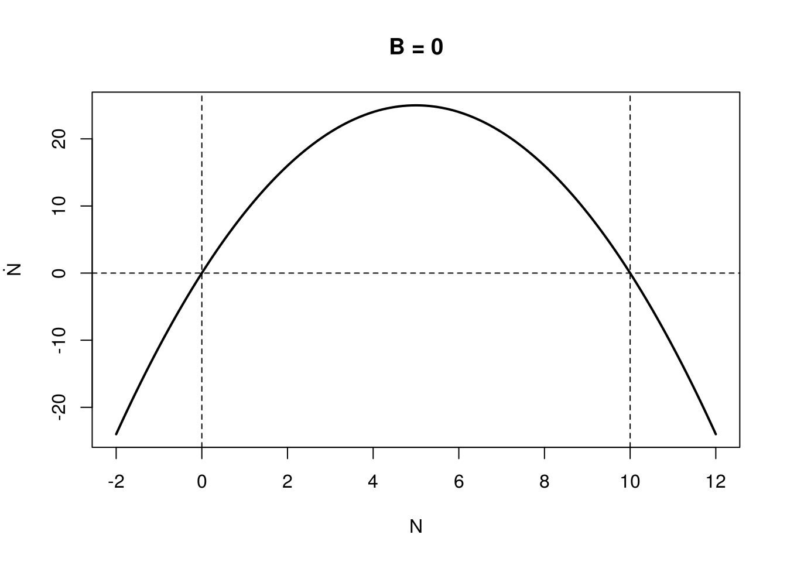
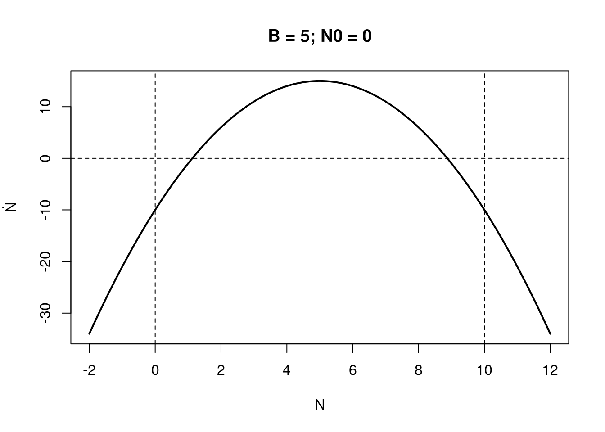
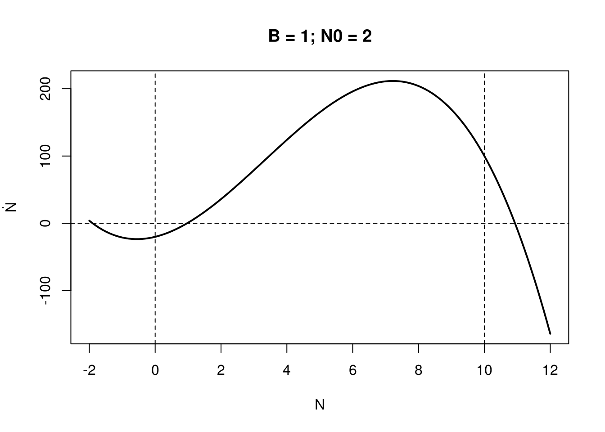
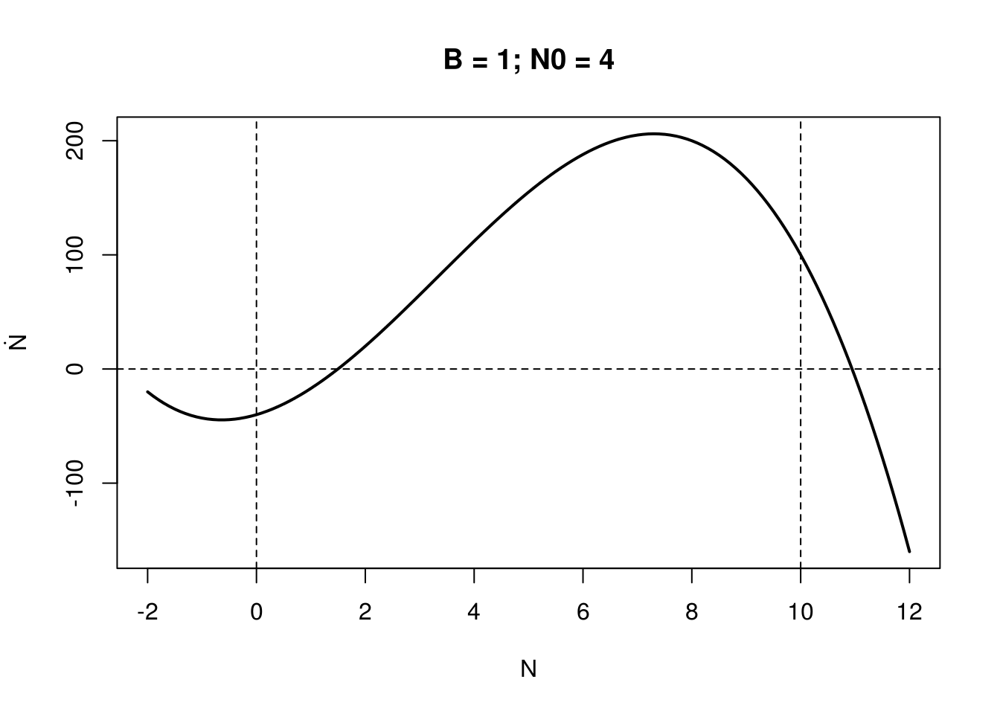
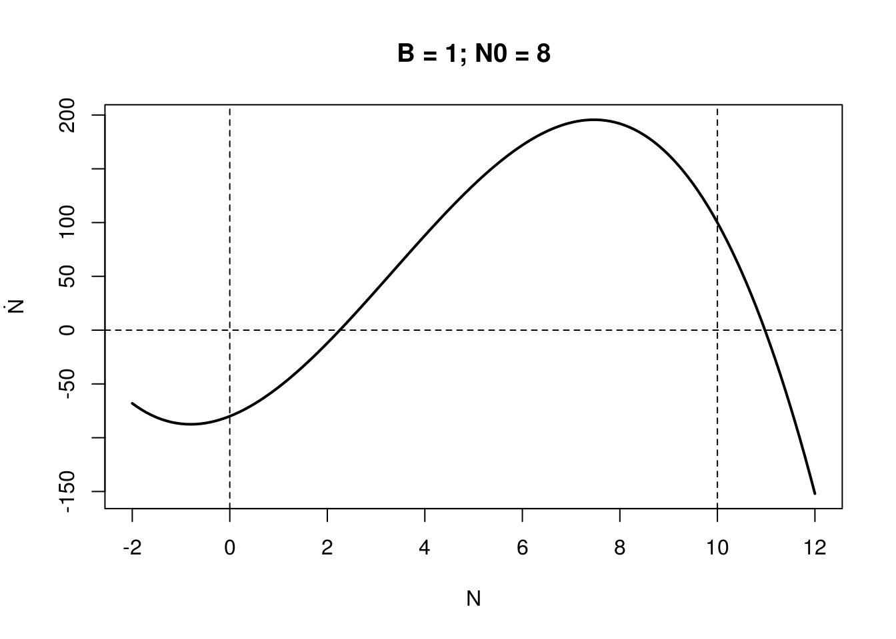

Chapter 4 Continuous ODE in one dimension
4.1 General terminology
\[\frac{dx}{dt} = \dot{x} = x' = f(x,t, \Theta)\]
where:
xis a state variable (e.g. a population of one species)tstands for timeΘincludes all the parametersfis a transformation
4.2 Linear case
\[ \left\{ \begin{array}{l} {dx \over dt} = ax,\\ x(0) = x_0 \end{array} \right. \]
where \(a\) is a real number. Note that here Θ = a.
- Phase portrait
- star nodes
- non-isolated fixed points
- stable node
- saddle node
- different rates
- non-trivial equilibrium sometimes called interior
4.3 Study case
Use local stability analysis on the logistic (all equilibria) and analytically calculate lambda. What is the stability response to r? For the following Budworm model done by D. Ludwig,
\[\frac{dN}{dt} = rN\left(1-\frac{N}{K}\right) - \frac{BN^2}{N^2 + N_0}\]
where the budworm, N, grows logistical but is consumed by a constant amount of predators (density B). Using dynamical systems theory: i) find local equilibria for K and B (assume r=1); ii) solve for the local stability of all relevant equilibria as a function of budworm carrying capacity, K, and the predator density, B. What bifurcations do we expect and when?
Hint: for insight it may help to do this graphically (and produce code dN/dt to check) consider the growth function (logistic term: rN(1-N/K)) and the mortality function (– BN2/(N2+No)) separately (i.e., note that where the growth function crosses the mortality function we have equilibria: plotting N versus these rates or terms of F(N) may therefore be useful).
4.3.1 Expanding the equation
Non trivial equilibrium:
\[rN\left(1-\frac{N}{K}\right) = \frac{BN^2}{N^2 + N_0}\]
or simply:
\[r\left(1-\frac{N}{K}\right) = \frac{BN}{N^2 + N_0}\]
this yields:
\[-\frac{r}{K}N^3 + rN^2 + \left(r\frac{N_0}{K}-B\right)N - rN_0 = 0\]
let’s divide by \(\frac{r}{K}\):
\[-N^3 + KN^2 + \left(N_0-K\frac{B}{r}\right)N - KN_0 = 0\]
Assuming \(r = 1\), \(K = 10\), Below are shown this curve for station
seqN <- seq(-2, 12, .1)
pol <- function(N, r, K, B, N0) {
if (!B) {
# attack term does not exits
out <- K*N-N*N
} else {
if (!N0) {
out <- K*N-N*N - B
} else out <- -N^3 + K*N*N + (N0-K*(B/r))*N + - K*N0
}
out
}
##
cust_plot <- function(seqN, r, K, B, N0, main) {
plot(seqN, pol(seqN, r, K, B, N0), type = "l", lwd = 2,
main = main, xlab = "N", ylab = TeX("\\dot{N}"))
abline(h=0, v=c(0,10), lty=2)
}
cust_plot(seqN, -1, 10, 0, 0, main = "B = 0")
cust_plot(seqN, -1, 10, 10, 0, main = "B = 5; N0 = 0")
cust_plot(seqN, -1, 10, 1, 2, main = "B = 1; N0 = 2")
cust_plot(seqN, -1, 10, 1, 4, main = "B = 1; N0 = 4")
cust_plot(seqN, -1, 10, 1, 8, main = "B = 1; N0 = 8")